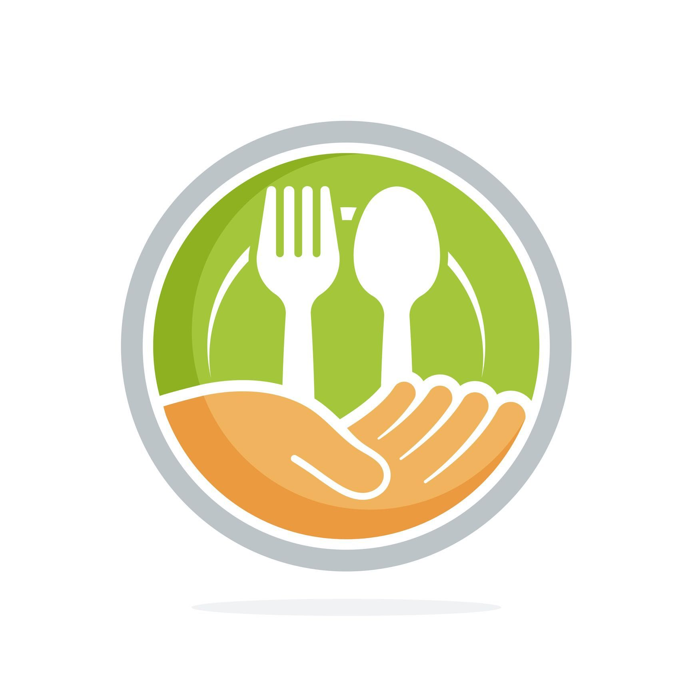

Evitar o desperdício de alimentos é essencial para promover a sustentabilidade ambiental, a eficiência econômica e a justiça social. Aqui estão algumas estratégias eficazes que indivíduos, famílias e organizações podem adotar para reduzir o desperdício de alimentos:
1. Planejamento das Compras
- Faça uma lista: Antes de ir às compras, verifique o que realmente precisa para evitar comprar itens que já possui.
- Planeje suas refeições: Isso ajuda a comprar apenas os ingredientes necessários.
2. Armazenamento Adequado
- Conheça as melhores práticas: Armazene alimentos na temperatura e condições apropriadas para prolongar sua vida útil.
- Organize a geladeira e a despensa: Mantenha os alimentos mais antigos à frente para usá-los primeiro.
3. Porções Apropriadas
- Cozinhe o necessário: Evite preparar comida em excesso que pode acabar não sendo consumida.
- Use sobras criativamente: Transforme sobras de refeições em novos pratos.
4. Compreensão das Etiquetas
- Entenda as datas: “Consumir até” indica segurança alimentar, enquanto “Melhor antes” refere-se à qualidade. Muitos produtos ainda são seguros e bons para consumo após a data de “Melhor antes”.
5. Conservação e Preservação
- Congele: Se não for consumir imediatamente, muitos alimentos, como pão e legumes, podem ser congelados para uso futuro.
- Preserve: Aprenda técnicas de conservação, como fazer geleias, conservas e fermentados.
6. Compartilhamento de Alimentos
- Doe o excedente: Alimentos não utilizados e ainda seguros para consumo podem ser doados para quem precisa.
- Compartilhe com vizinhos e amigos: Isso evita que alimentos perecíveis se estraguem.
7. Compostagem
- Recicle restos de comida: A compostagem transforma resíduos orgânicos em adubo, reduzindo o desperdício enviado para aterros sanitários.
8. Educação e Conscientização
- Informe-se e informe outros: Conhecer o impacto do desperdício de alimentos incentiva práticas mais sustentáveis.
- Participe de iniciativas comunitárias: Engaje-se em programas locais de redução de desperdício de alimentos.
9. Apoio a Políticas Sustentáveis
- Apoie políticas de redução de desperdício: Incentive políticas locais, nacionais e de negócios que promovam a redução do desperdício de alimentos.
Ao adotar essas estratégias, cada pessoa pode contribuir significativamente para a redução do desperdício de alimentos, beneficiando o meio ambiente, economizando dinheiro e ajudando a alimentar mais pessoas de maneira sustentável.